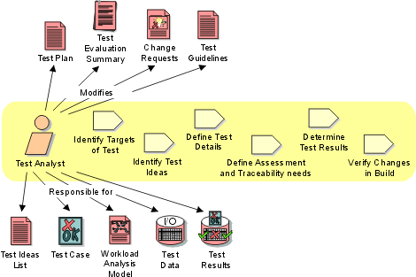

Role:
Test Analyst
The Test Analyst role is responsible for initially identifying and subsequently
defining the required tests, monitoring the test coverage and evaluating the
overall quality experienced when testing the Target Test Items. This role also
involves specifying the required Test Data and evaluating the outcome of the
testing conducted in each test cycle. Sometimes this role is also referred to
as the Test Designer, or considered part of the Tester role. This
role is responsible for:
- Identifying the Target Test Items to be evaluated by the test effort
- Defining the appropriate tests required and any associated Test Data
- Gathering and managing the Test Data
- Evaluating the outcome of each test cycle

Staffing 
Roles organize the responsibility for performing activities and developing
artifacts into logical groups. Each role can be assigned to one or more people,
and each person can fill one or more roles. When staffing the Test Analyst role,
you need to consider both the skills required for the role and the different
approaches you can take to assigning staff to the role.
Skills
The appropriate skills and knowledge for the Test Analyst role include:
- good analytical skills
- a challenging and enquiring mind
- attention to detail and tenacity
- understanding of common software failures and faults
- knowledge of the domain (highly desirable)
- knowledge of the system or application-under-test (highly desirable)
- experience in a variety of testing efforts (desirable)
Role assignment approaches
The Test Analyst role can be assigned in the following ways:
- Assign one or more test staff members to perform both the Test Analyst
and Tester roles. This is a commonly adopted approach and is particularly
suitable for small teams and for any sized test team where the team is made
up of an experienced group of Testers of relatively equal skill level.
- Assign one or more test staff members to perform the Test Analyst role
only. This works well in large teams, particularly in situations where there
are domain experts who have minimal test implementation experience but who
have significant domain knowledge to specify appropriate tests and determine
the appropriate results for those tests. This role assignment strategy is
also useful to separate responsibilities when some of the test staff have
minimal test automation experience and would have difficulty filling the
Tester and Test Designer roles.
- Assign one staff member to perform both the Test Analyst and Test Manager
roles. This strategy is another option for small to mid-sized test teams.
You need to be careful that the minutia of the Test Analyst role does not
adversely effect the responsibilities of the Test Manager role. Mitigate
that risk by assigning less critical Test Analyst tasks to a person filling
both these roles, leaving the most important tasks to team members without
any direct management responsibility.
- Assign one or more staff members to perform both the Test Analyst and
Requirements Specifier roles. This strategy is another option for small
to mid-sized test teams, and is often used where domain experts are available
to play both roles. You need to be careful that appropriate effort is devoted
to satisfying both of these roles.
Note also that specific skill requirements vary depending on the type of testing
being conducted. For example, the skills needed to sucessfully analyze the requirements
for system load testing are different from those needed for analyzing system
functional testing requirements.
Further Information
We recommend recommend reading Kaner, Bach & Pettichord's Lessons Learned
in Software Testing [KAN99], which contains
an excellent collection of important concerns for test teams. Of special interest
to the Test Analyst role are the chapters on the Role of the test group,
Thinking like a tester, Test planning and strategy and Bug
advocacy.
Copyright
© 1987 - 2001 Rational Software Corporation
|  Roles and Activities >
Roles and Activities >
 Test Analyst
Test Analyst